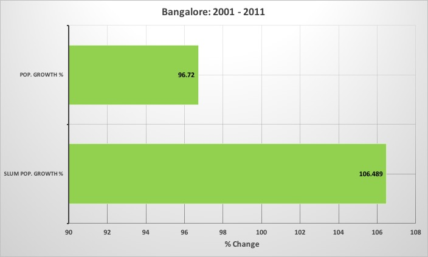
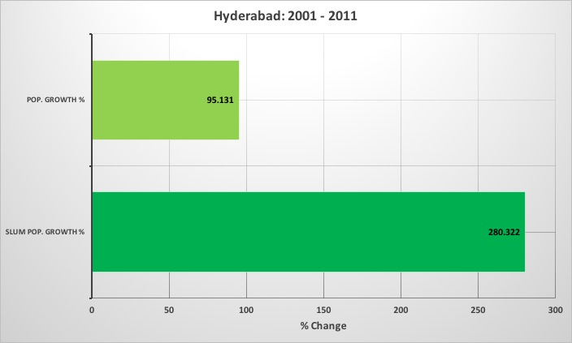
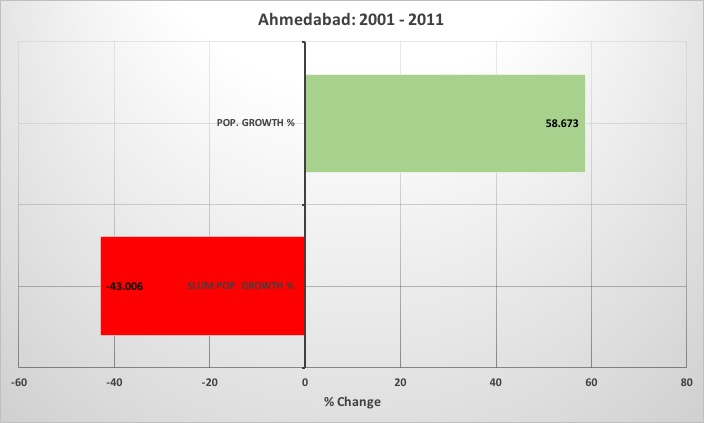
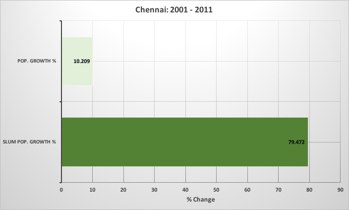
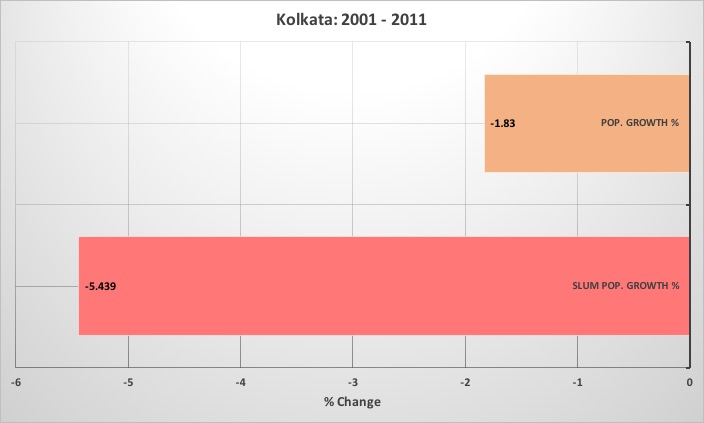
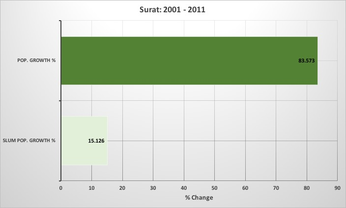
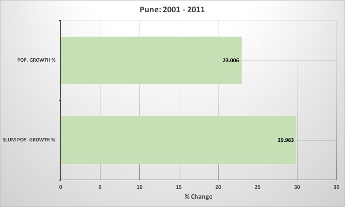
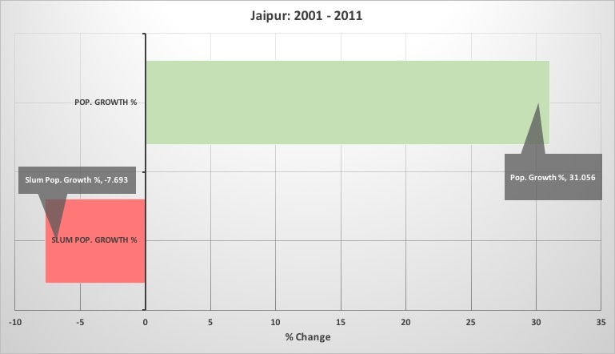

Slums in the Big City: An Introduction
As a part of the 2001 Census, for the first time the total slum populations in large cities was recorded. This data was subsequently updated during the 2011 Census.
In this project, we looked at the slum population data with respect to the total population data for India's 10 most populus cities.
The aim was to identify any trends between population and slum growth in these cities.
The graph under the map is interactive and gives a quick perspecitve of how the Total Population has changed in these cities between 2001 and 2011
The idea is to give a quick idea about how much or little, the total population of a city has grown
Mumbai

With close to 12 million residents, Mumbai remains one of India's most populus cities.
- Slum Pop. (2011): 5.20 million
- Slum Pop. (2001): 5.82 million
Mumbai posits an interesting trend. While Mumbai's overall population rose by 4.4% between 2001 and 2011, its slum population fell by nearly 10.59% during the same time
Please click on the graph to see it in full screen. Hit back to return.
Delhi

With approximately 16 million residents, Delhi became India's most populus city in 2011
- Slum Pop. (2011): 1.78 million
- Slum Pop. (2001): 1.85 million
Like Mumbai, Delhi too displays a remarkable trend. Between 2001 - 2011, Delhi's population grew by nearly 66.53% while its slum population fell by 3.73%
Please click on the graph to see it in full screen. Hit back to return.
Bangalore
{kind=link}
The overall population in Bangalore almost doubled between 2001 and 2011.
- Slum Pop. (2011): 0.71 million
- Slum Pop. (2001): 0.34 million
While its absolute numbers are far lower than Delhi or Mumbai, the total slum population in Bangalore doubled during this time!
Bangalore's Population grew by 96.72% between 2001 - 2011. In the same time, its slum population also grew by 106.48%
Please click on the graph to see it in full screen. Hit back to return.
Hyderabad
{kind=link}
Like Bangalore, the overall population in Hyderabad almost doubled between 2001 and 2011.
- Slum Pop. (2011): 2.28 million
- Slum Pop. (2001): 0.60 million
Hyderabad's Population grew by 95.13% between 2001 - 2011, which is pretty similar to Bangalore's growth rate. However, Hyderabad's slum population grew by a massive 280.32%
This is the highest slum growth rate across all major Indian Cities!
Please click on the graph to see it in full screen. Hit back to return.
Ahmedabad
{kind=link}
Ahmedabad acheived some very interesting and respectable results
- Slum Pop. (2011): 0.25 million
- Slum Pop. (2001): 0.43 million
While Ahmedabad's population grew by a health 58.67% the slum population fell by almost 43% This is the largest % reduction in slum population across all major Indian Cities
Please click on the graph to see it in full screen. Hit back to return.
Chennai
{kind=link}
Chennai exhibited trends that highlight a rather different trend compared to what we've seen thus far
- Slum Pop. (2011): 1.34 million
- Slum Pop. (2001): 0.74 million
Chennai had the 3rd lowest population growth rate amongst the top 10 cities. At 10.20% the population growth rate of Chennai is just more than double of Mumbai. However, despite this the total slum population in Chennai grew by about 79.47%
Please click on the graph to see it in full screen. Hit back to return.
Kolkata
{kind=link}
Kolkata is the only city in the top 10 to record a fall in its total population between 2001 and 2011
- Slum Pop. (2011): 1.40 million
- Slum Pop. (2001): 1.49 million
While Kolkata's population reduced by 1.83% its slum population fell by 5.43% over the decade. This puts Kolkata in a class of its own.
Please click on the graph to see it in full screen. Hit back to return.
Surat
{kind=link}
Surat is the only case where both Total Population and Slum Population have grown, but with the slum population growing far slower than the total population
- Slum Pop. (2011): 0.46 million
- Slum Pop. (2001): 0.40 million
Surat's total population grew at a rate of almost 85% During the same time, its slum population only grew by 15.12%
A trend not seen in any other city in the Top 10
Please click on the graph to see it in full screen. Hit back to return.
Pune
{kind=link}
Pune displays very even growth rates across both Total Population and Slum Populations
- Slum Pop. (2011): 0.69 million
- Slum Pop. (2001): 0.53 million
Between 2001 and 2011, Pune's total population grew by approximately 23% During this time its slum population grew by a similar 29.96%
This however does not account for Pimpri-Chinchwad, Pune's suburbs that can somewhat skew the total results
Please click on the graph to see it in full screen. Hit back to return.
Jaipur
{kind=link}
Jaipur displays trends that are similar to that of Ahmedabad
- Slum Pop. (2011): 0.32 million
- Slum Pop. (2001): 0.35 million
Like Ahmedabad, Jaipur also recorded a reasonable total population growth rate of 31.05% while its slum population fell by 7.69% during the same period.
Please click on the graph to see it in full screen. Hit back to return.
Conclusion
This report does not in any way provide any definitive reasons for why slum populations might be growing or falling with respect to the total population of cities.
However, what we do hope is clearly highlighted is the fact that the trends for slum population levels and total popultion levels are not the same across various large cities. This potentially provides a compelling reason to delve deeper to find possible reasons for such variations in trends across all these cities
It could be an interesting exercise to understand what led to a fall in slum levels across Mumbai, Delhi or Ahmedabad. Are these results of certain administrative policies or clever accounting gimics to hide the grim realities?
All in all, this can serve as a spring board to find ideas to help deal with urban housing problems in India
Developed by Apuroop Sethupathy, Dibyendu Mishra and Shivangi Tikekar